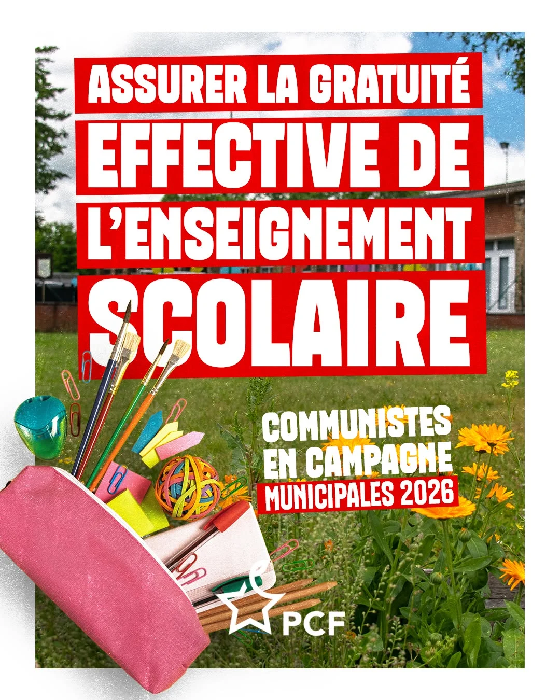

Publication relayée par le PCF 79
Les propositions du PCF pour la gratuité de l’école
Date de mise à jour indiquée par Facebook · 23 janvier 2026
Texte de la publication · PCF national
Assurer la gratuité effective de l’enseignement scolaire
Aujourd’hui, la “gratuité” de l’école est souvent un mot vide : fournitures, sorties, activités… tout coûte cher, et ce sont les familles qui payent.
Pour garantir une vraie égalité, les communistes veulent :
la mise à disposition gratuite des fournitures scolaires pour tous les élèves
l’accès gratuit aux activités scolaires : sorties, classes de découverte, projets pédagogiques…
L’école publique, laïque et gratuite, c’est la loi depuis près de 150 ans : faisons-la appliquer !
En 2026, faisons le choix de communes qui protègent les familles et investissent dans l’avenir.
Communistes en campagne - Municipales 2026

Sources
PCF national · publication relayée par le PCF 79 · bibliothèque Facebook · AR-0002-FB-00894
À lire aussi · Rentrée 2025. Mobilisons-nous pour l’école publique